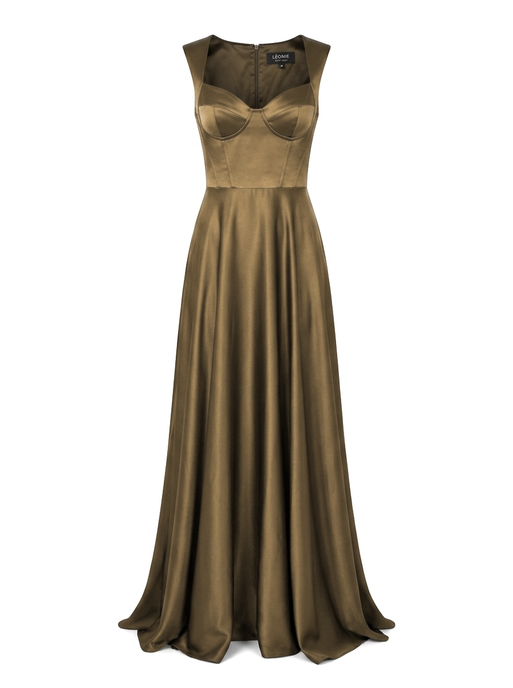

Guide Tailles
Par Camille Roy
•
5 min de lecture
Guide Complet 2026 : Pourquoi Zara et ASOS ne Taillent Pas Pareil et Comment Choisir Sans Se Tromper
Une taille 38 chez Zara équivaut-elle à un M chez ASOS ? Découvrez les écarts de tour de taille, de hanches et d'aisance poitrine entre les géants du fast-fashion européen.
Lire le guide complet →
24 Nov 2026